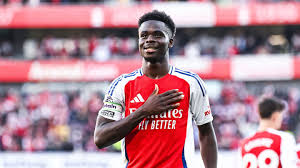
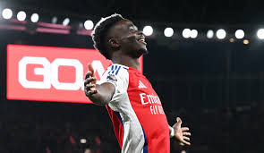

Bukayo Saka is a professional footballer who plays as a winger, left-back, or midfielder for Arsenal and the England national team. Known for his versatility, pace, and technical skills, Saka has become one of the most promising young talents in football.
Born on September 5, 2001, in Ealing, London, Saka joined Arsenal's youth academy at a young age and quickly progressed through the ranks. He made his first-team debut in 2018 and has since established himself as a key player for both club and country.
Saka's playing style is characterized by his dribbling ability, vision, and work rate. He is capable of playing in multiple positions on the field, making him a valuable asset for his team. Off the pitch, Saka is known for his professionalism and dedication to his craft.
As of 2025, Bukayo Saka continues to be an integral part of Arsenal's squad and is expected to have a bright future ahead in both club and international football.
As of 2025, he has crucial goals against the likes of Real Madrid, Liverpool and other big clubs.
He is also known for his charity work and has been involved in various initiatives to support underprivileged communities.
Fans often refer to him affectionately as "Our Starboy" due to his stellar performances on the field.
For more information, you can visit his Wikipedia page.
